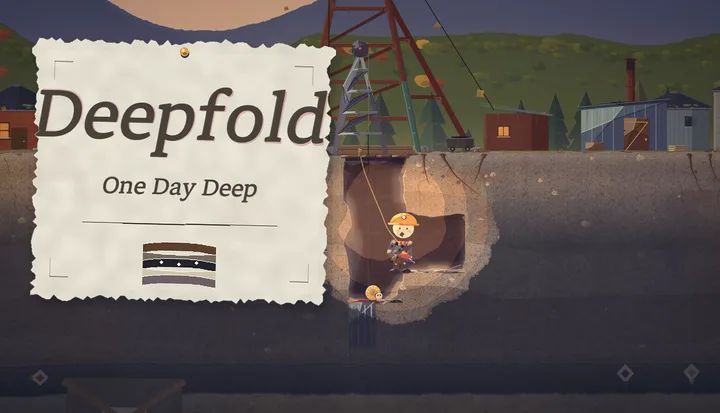
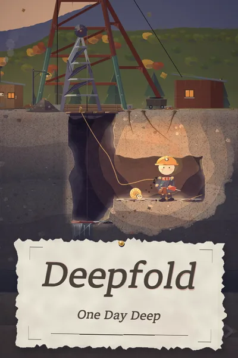

사실 정보
- 제목
- Deepfold: One Day Deep
- 개발
- 민공방 게임즈 (1인 개발, 박민근), 대한민국
- 배급
- 자체 배급
- 출시
- 2027년 3월 6일
- 체험판
- 2027년 2월, 프롤로그~3장
- 플랫폼
- PC (Windows) · Steam
- 가격
- 미정
- 장르
- 종이 오림 채굴, 스토리
- 언어
- 인터페이스·자막 20개 언어, 등장인물 음성
- 예고편
- Steam 상점 페이지에 곧 공개
게임 소개
짧은 소개
2019년, 할머니는 사고로 6,600만 년 전에 갇혔고 그곳에서 20년을 살았습니다. 할머니가 남긴 타임 드릴로 먼 과거에 광맥을 심고, 수백만 년을 빨리 감고, 지금의 땅을 손으로 파 내려갑니다. 드릴을 올릴 때마다 할머니 글씨의 편지가 한 통씩 올라옵니다. 1·2·3부로 이어지는 종이 오림 채굴 스토리 게임입니다. 천천히 와.
긴 소개
2019년, 지질학자였던 할머니는 사고로 캡슐을 탄 채 6,600만 년 전으로 가게 되었고, 다시 돌아오지 못했습니다. 할머니는 그곳에서 20년을 살며 편지를 썼습니다.
2035년 가을, 당신은 폐광촌 노을재에 있는 할머니의 문 닫은 광산과, 창고에 잠든 타임 드릴을 물려받습니다. 드릴은 물건만 과거로 보내고, 돌만 끌어올립니다. 드릴을 한 단계 올릴 때마다, 돌과 함께 할머니의 편지가 한 통씩 올라옵니다.
노을이 참 길구나. 단추가 무릎에 기대 잠들었어. 할머니는 오래, 잘 살았어. 걱정 마.
연대표를 내려 먼 과거의 땅을 드러내고, 그 위에 광맥 카드를 놓습니다. 빨리 감기를 누르면 수백만 년이 몇 초에 흐르고, 땅이 한 겹씩 쌓여 심은 것을 덮으며 광맥으로 만듭니다. 지금으로 돌아와 내가 만든 광맥까지 한 칸씩 직접 파 내려가고, 광석을 팔아 여러 시대의 손님이 보내온 주문을 채웁니다.
땅도, 마을도, 사람도 모두 찢고 오려 겹친 종이입니다. 가까이 당겨 볼수록 종이 섬유와 못 자국, 작은 결정이 새로 보입니다. 이야기는 1·2·3부로 이어집니다.
특징
- 긴 대사 대신 편지와 손님의 한마디로 쌓이는 이야기. 편지는 모두 사실입니다.
- 심고, 감고, 판다 — 광맥을 직접 만들어 캐는 채굴.
- 이야기가 나아갈수록 장비와 일손이 늘어 점점 시원해지는 굴착.
- 잔잔한 피아노 음악. 광석이 나오면 피아노 건반이 울립니다.
- 등장인물 음성, 20개 언어의 인터페이스와 자막.
- 글자 '아주 크게', 움직임 줄이기, 화면 흔들림 끄기. 16:9·16:10·21:9 지원.
개발사
민공방 게임즈는 박민근이 운영하는 대한민국의 1인 개발 스튜디오입니다. 첫 게임 Soul Saver를 2026년 10월 Steam에 출시했습니다.
로고·캡슐 그림
ZIP 받기 (14MB)
게임 기사·영상에 자유롭게 써 주세요. 로고는 변형하지 말아 주세요.